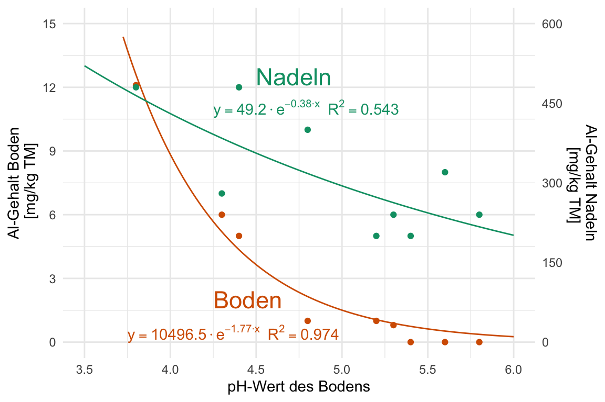
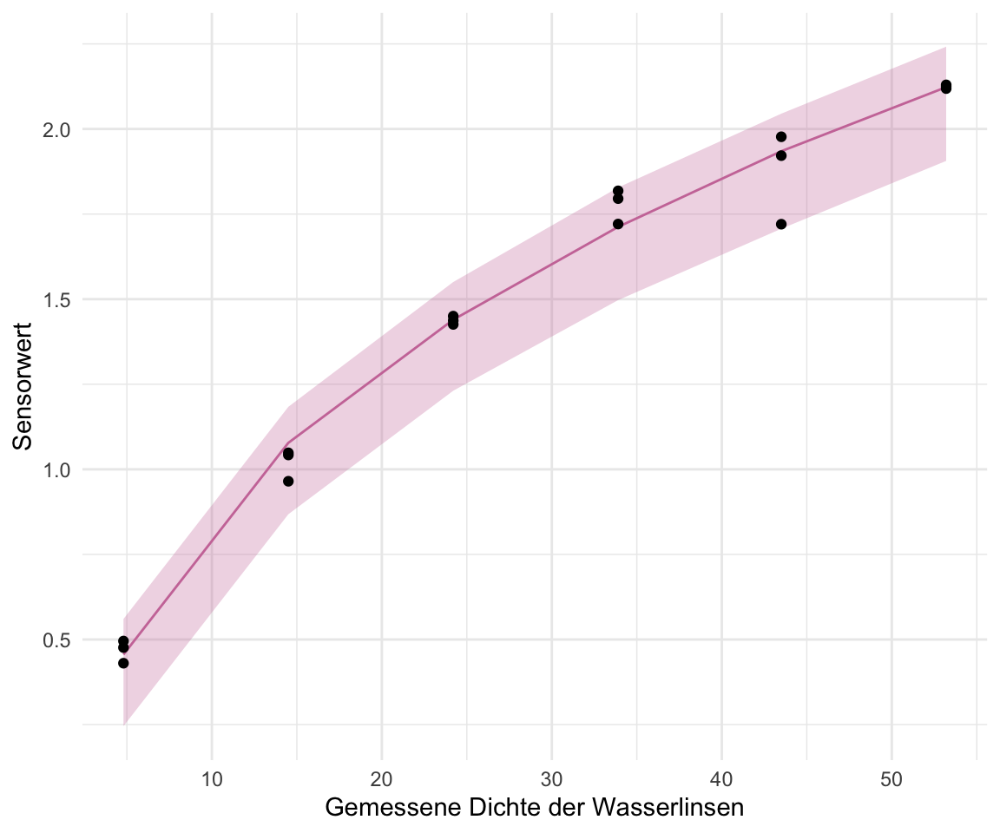
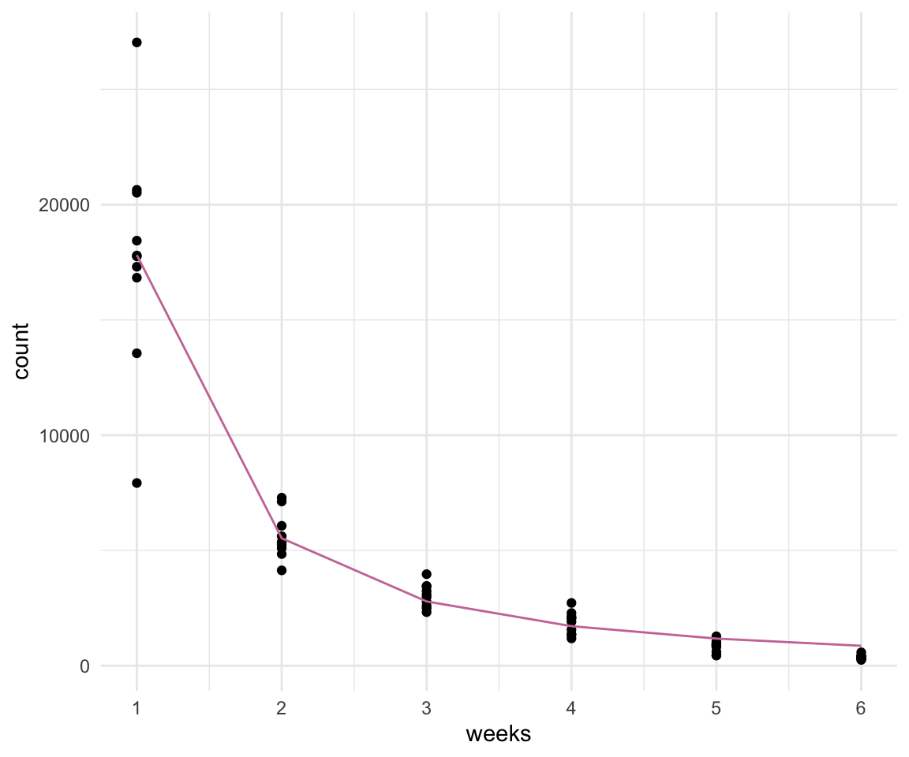
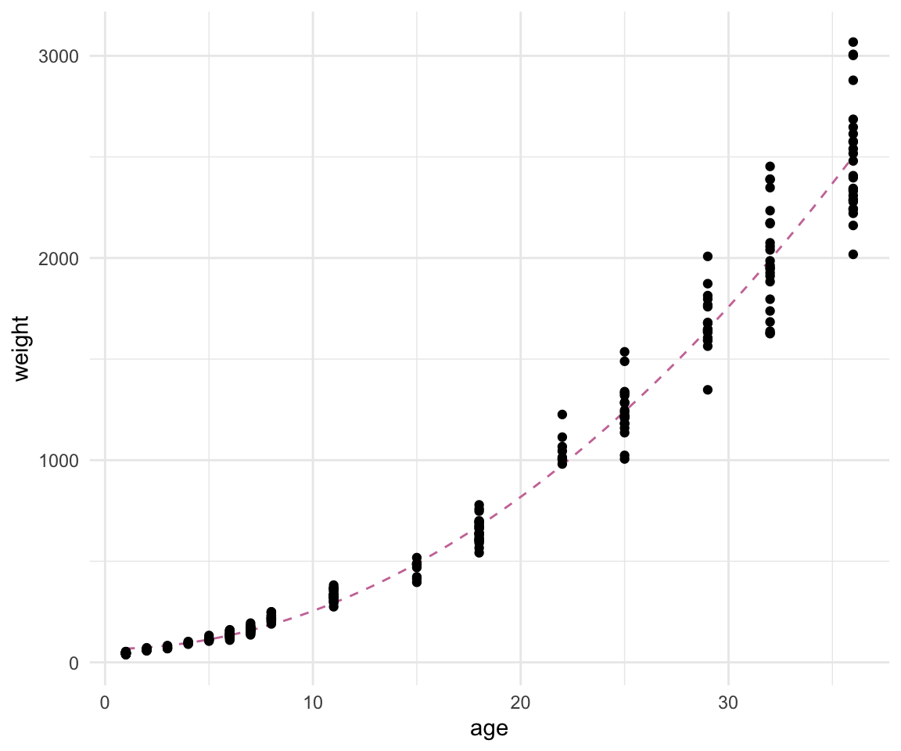

func_tbl <- tibble(iodine = c(0, 0.25, 0.5, 0.75, 1, 2),
content = c(0, 100, 150, 200, 300, 400))52 Nicht lineare Regression
Letzte Änderung am 09. January 2024 um 20:37:35
“And you may ask yourself; Well… How did I get here?; And you may ask yourself; ‘How do I work this?’” — Talking Heads - Once in a Lifetime
Was wollen wir mit der nicht-linearen Regression erreichen? Zum einen erhalten wir durch die nicht-lineare Regression die Möglichkeit auch Abhängigkeiten zu modellieren, die nicht linear sind. Zum anderen wollen wir auch nicht nur Gruppen miteinander vergleichen, sondern auch Verläufe modellieren. Häufig sind diese Verläufe über die Zeit nicht linear. Es gibt Sättigungskurven oder aber auch einen exponentiellen Verfall oder ein exponentielles Wachstum. All dies können wir mit nicht-linearen Modellen abbilden und modellieren. Für Zeitreihen habe ich dann noch ein eigenes Kapitel geschrieben, hier wollen wir uns dann mal mit den Verläufen beschäftigen und schauen, dass wir die Koeffizienten einer Geradengleichung erhalten.
Wichtig hierbei ist, dass wir oft nicht statistisch Testen, sondern ein Modell haben wollen, dass die Punkte gut beschreibt. Mit Modell meinen wir hier die Gerade, die durch die Punkte läuft. Für diese Grade wollen wir die Koeffizienten schätzen also rausfinden, wie wir später die Gerade zeichnen könnten, wenn wir die Punkte nicht vorliegen hätten. Also die Frage beantworten, wie \(y\) nicht-linear von \(x\) abhängt. Wir immer gibt es eine Reihe von Möglichkeiten das Problem zu lösen einer Geradengleichung zu erhalten, die nicht linear ist. Normalerweise haben wir ja eine Regressionsgleichung für eine simple lineare Regression in der folgenden Form vorliegen.
\[ y \sim \beta_0 + \beta_1 \cdot x \]
Wenn wir jetzt aber eine nicht-lineare Regression rechnen wollen, dann müssen wir hier zum Beispiel ein Polynom einfügen. Damit schreiben wir nicht mehr \(x\) sondern \(x^b\) und erhalten folgende, beispielhafte Formel. Warum beispielhaft? Je nach Fragestellung brauchen wir verschiedene Parameter die wir dann für den Kurvenverlauf bestimmen müssen.
\[ y \sim \beta_0 + \beta_1 \cdot x^b \]
Dieses \(b\) (eng. power) und die anderen Koeffizienten müssen wir jetzt irgendwie berechnen. Manchmal fällt das \(\beta_1\) dann auch weg oder aber wir haben eben eine noch komplexere Art der mathematischen Darstellung. Wir gehen daher hier dann mal verschiedene Lösungen für das Problem durch. Nicht alle Lösungen liefern auch eine Geradengleichung, die du dann auch aufschreiben kannst.
Und damit kommen wir auch zu dem zentralen Problem. Woher weiß ich, welche Gerade oder Kurve ich berechnen will? Eine super Hilfestellung liefert die Seite A collection of self-starters for nonlinear regression in R. Dort kannst du einmal schauen, welche Funktionen es gibt, die du dann zum Beispiel in nls() aus dem R Paket {nls} modellieren kannst. Mit Modellieren meine ich dann, die Geradenfunktion bestimmen kannst. Die richtige Startfunktion zu finden ist aber wirklich nicht trivial. Dafür gibt es dann aber mit dem R Paket {mfp} eine Lösung, dafür kann das Paket dann andere Sachen nicht. Schau dich also einmal um und entscheide, was du brauchst um deine Fragestellung zu beantworten.
Weitere Tutorien für die Analyse von nicht-linearen Daten
Wie immer gibt es auch für die Frage nach dem Tutorium für die nicht-lineare Regression verschiedene Quellen. Ich kann noch folgende Informationen und Hilfen empfehlen.
- Das R Paket
{nlraa}ist direkt für die Nutzung in den Agrarwissenschaften ausgelegt. Es finden sich auf der Hilfseite nlraa: An R package for Nonlinear Regression Applications in Agricultural Research auch komplexere Beispiele für die Modellierung von Daten. - Die Autoren Archontoulis und Miguez (2015) mit der wissenschaftlichen Veröffentlichung Nonlinear Regression Models and Applications in Agricultural Research liefern nochmal einen wunderbaren Überblick über die Möglichkeiten der nicht-linearen Regression in den Agrarwissenschaften.
- Wenn es einfach nur eine Kurve durch die Punkte sein soll ohne eine mathematische Gleichung, dann kann das Tutorium zu GAM and LOESS smoothing helfen. Denn weder GAM noch LOESS liefern eine Gleichung die du aufschreiben kannst, dafür sehr gute Anpassungen an Punkte.
- Wie schon erwähnt, konzentrieren wir uns hier auf ein paar zentrale Pakete in R. Wir immer gibt es aber auch hier noch mehr wie bei dem Tutorium Nonlinear Modelling using nls, nlme and brms. Du musst dann mal rechts und links schauen, auch für mich ist das ja eine Linksammlung zu der ich dann mal zurückkehre.
Schaue dir auch die folgenden Zerforschenbeispiele einmal an, wenn dich mehr zu dem Thema der Abbildung von nicht-linearen Regressionen interessiert. Du findest in den Kästen Beispiele für Posterabbildungen zur nicht-linearen Regression, die ich dann zerforscht habe. Dann habe ich auch noch gleich die nicht-lineare Regression gerechnet um die Geradengleichungen sauber darzustellen.
Zerforschen: Nicht-lineare Regression mit Zielbereich
In diesem Zerforschenbeispiel schauen wir uns eine nicht-lineare Regression einmal genauer an. Ganz am Ende geht es dann auch nochmal ganz kurz um die Modellierung. Jetzt wollen wir uns aber erstmal die folgende Abbildung vornehmen und diese in ggplot nachbauen. Das wird eine echte Freude, denn die Abbildung ist wunderbar komplex. Wir haben zum einen die nicht-linearen Regressionsgeraden sowie deren Funktionen im Plot. Darüber hinaus dann noch ein Zielbereich mit einem Pfeil und einer Beschriftung. Am Ende müssen wir dann auch noch die Achsen mit den mathematischen Formeln beschriften. Wir haben also einiges zu tun.

Zuerst habe ich mir einmal einen leeren Plot erstellt in dem ich nur die Regressionsgleichungen abbilden werde. Aus den Gleichungen kann ich mir dann die Mittelwerte von dem content für die entsprechenden iodine-Werte berechnen. Also erstmal ein paar passende \(x\)-Werte und die entsprechenden \(y\)-Werte. Hierbei sind die \(y\)-Werte nicht so wichtig, die werden wir uns ja mit den Regressionsgleichungen berechnen, aber wir brauchen ja die \(y\)-Werte für unser Canvas. Die Funktion ggplot() muss ja wissen was auf \(x\) und \(y\) soll.
Dann schreibe ich mir noch über das \(x){} die Funktionen für die Regressionsgleichungen in R auf. Dabei ist \(x){} die Kurzschreibweise für function(x){}. Ich mache es mir hier nur etwas leichter.
ki_func <- \(x) {-104 * x^2 + 445 * x}
kio3_func <- \(x) {-117 * x^2 + 374 * x}Dann schauen wir uns einmal die beiden Funktion mit dem geom_function() einmal in der Abbildung 52.2 einmal an. Das geom_function() nimmt dabei eine definierte Funktion und berechnet dann die entsprechenden \(y\)-Werte aus den \(x\)-Werten.
ggplot(data = func_tbl, aes(x = iodine, y = content)) +
theme_minimal() +
geom_function(fun = ki_func, color = cbbPalette[2], linetype = 'dashed') +
geom_function(fun = kio3_func, color = cbbPalette[3], linetype = 'dashed') 
Anhand der beiden Funktionen kann ich mir jetzt auch die Mittelwerte berechnen. Die Mittelwerte sind ja die Werte, die sich für einen iodine-Wert auf der entsprechenden Regressionsgeraden ergeben. Hier also einmal alle meine Werte des content auf den beiden Geraden für die entsprechenden iodine-Werte.
tibble(iodine = c(0, 0.25, 0.5, 0.75, 1, 2),
ki = ki_func(iodine),
kio3 = kio3_func(iodine))# A tibble: 6 × 3
iodine ki kio3
<dbl> <dbl> <dbl>
1 0 0 0
2 0.25 105. 86.2
3 0.5 196. 158.
4 0.75 275. 215.
5 1 341 257
6 2 474 280 Ich habe mir dann die Mittelwerte genommen und für jede iodine/ki-Kombination noch zwei Werte ergänzt um dann noch etwas Streuung zu bekommen. So habe ich dann nur drei Beobachtungen pro Kombination, aber die Anzahl soll hier erstmal reichen. Du findest die Werte in der Datei zerforschen_regression.xlsx. Hier ist die Datei in einem Auszug dann einmal geladen und dargestellt.
regression_tbl <- read_excel("data/zerforschen_regression.xlsx") %>%
mutate(type = as_factor(type))
regression_tbl # A tibble: 36 × 3
type iodine content
<fct> <dbl> <dbl>
1 KI 0 0.1
2 KI 0 0.05
3 KI 0 0.15
4 KI 0.25 100
5 KI 0.25 105
6 KI 0.25 110
7 KI 0.5 180
8 KI 0.5 190
9 KI 0.5 200
10 KI 0.75 275
# ℹ 26 more rowsWir berechnen wie gewohnt die Mittelwerte und die Standardabweichungen um diese dann als Punkte und Fehlerbalken in der Abbildung darstellen zu können.
stat_tbl <- regression_tbl %>%
group_by(type, iodine) %>%
summarise(mean = mean(content),
sd = sd(content))
stat_tbl# A tibble: 12 × 4
# Groups: type [2]
type iodine mean sd
<fct> <dbl> <dbl> <dbl>
1 KI 0 0.1 0.05
2 KI 0.25 105 5
3 KI 0.5 190 10
4 KI 0.75 262. 12.6
5 KI 1 340 30
6 KI 2 470 90
7 KIO3 0 0.117 0.0764
8 KIO3 0.25 83.3 7.64
9 KIO3 0.5 142. 10.4
10 KIO3 0.75 222. 10.4
11 KIO3 1 260 30
12 KIO3 2 275 50 So und nun geht es los. Ich habe dir den folgenden Code einmal annotiert. Klicke dafür dann einfach auf die Nummern um mehr Informationen zu erhalten. Der Code ist sehr umfangreich, aber die Abbildung ist ja auch recht komplex. Beachte im Besonderen den Abschnitt von weiter oben zu den mathematischen Ausdrücken in den Achsenbeschriftungen. Ich mache hier ja auch sehr viel um dann die mathematischen Ausdrücke richtig hinzukriegen.
ggplot(data = stat_tbl, aes(x = iodine, y = mean,
color = type)) +
theme_minimal() +
geom_function(fun = ki_func, color = cbbPalette[2], linetype = 'dashed') +
geom_function(fun = kio3_func, color = cbbPalette[3], linetype = 'dashed') +
geom_point() +
geom_errorbar(aes(ymin = mean-sd, ymax = mean+sd),
width = 0.03) +
scale_y_continuous(breaks = c(0, 150, 300, 450, 600), limits = c(0, 600)) +
scale_color_okabeito(labels = c(TeX(r"($KI$)"), TeX(r"($KIO_3$)"))) +
labs(color = "Iodine",
x = TeX(r"(Iodine supply $[kg\, l\, ha^{-1}]$)"),
y = TeX(r"(Iodine content $[\mu g\, l \, 100 g^{-1}\, f.m.]$)")) +
annotate("text", x = 0.8, y = 500, hjust = "left",
label = TeX(r"($y = -98.41 \cdot x^2 + 432.09 \cdot x;\; R^2 = 0.957$)"),
color = cbbPalette[2]) +
annotate("text", x = 0.8, y = 200, hjust = "left",
label = TeX(r"($y = -117.08 \cdot x^2 + 372.34 \cdot x;\; R^2 = 0.955$)"),
color = cbbPalette[3]) +
annotate("rect", xmin = 0, xmax = 2, ymin = 50, ymax = 100,
alpha = 0.2, fill = cbbPalette[6]) +
annotate("text", x = 1.525, y = 150, label = "Target range", hjust = "left",
size = 5) +
geom_curve(aes(x = 1.5, y = 150, xend = 1.25, yend = 105),
colour = "#555555",
size = 0.5,
curvature = 0.2,
arrow = arrow(length = unit(0.03, "npc"))) +
theme(legend.position = c(0.11, 0.8),
legend.box.background = element_rect(color = "black"),
legend.box.margin = margin(t = 1, l = 1),
legend.text.align = 0) - 1
- Hier werden die beiden nicht-linearen Kurven gezeichnet.
- 2
- Hier werden die Fehlerbalken erstellt.
- 3
- Hier passen wir die Labels in der Legende entsprechend an.
- 4
- Hier schreiben wir die Regressionsgleichung für die jeweiligen Kurven hin.
- 5
- Hier produzieren wir den blauen Bereich plus den Pfeil sowie die Beschreibung.

ggplot nachgebaut. Am Ende wurde es dann doch noch eine Legende und keine Beschriftung.Und dann zum Abschluss nochmal die nicht-lineare Regression um zu schauen welche Koeffizienten der nicht-linearen Regression wir erhalten würden, wenn wir unsere selbst ausgedachten Daten nehmen würden. Wir nutzen hier einmal die Funktion nls() um die nicht-lineare Regression anzupassen und dann die Funktion r2() aus dem R Paket performance für unser Bestimmtheitsmaß \(R^2\). Das Ganze machen wir dann natürlich für beide Geraden, also einmal für \(KI\) und einmal für \(KIO_3\).
fit <- nls(content ~ b1 * iodine^2 + b2 * iodine, data = filter(regression_tbl, type == "KI"),
start = c(b1 = 1, b2 = 1))
fit %>%
parameters::model_parameters() %>%
select(Parameter, Coefficient)# Fixed Effects
Parameter | Coefficient
-----------------------
b1 | -98.41
b2 | 432.09performance::r2(fit) R2: 0.957fit <- nls(content ~ b1 * iodine^2 + b2 * iodine, data = filter(regression_tbl, type == "KIO3"),
start = c(b1 = 1, b2 = 1))
fit %>%
parameters::model_parameters() %>%
select(Parameter, Coefficient)# Fixed Effects
Parameter | Coefficient
-----------------------
b1 | -117.08
b2 | 372.34performance::r2(fit) R2: 0.955
Zerforschen: Nicht-lineare Regression und zwei \(\boldsymbol{y}\)-Achsen
In diesem Zerforschenbeispiel wollen wir uns eine nicht-lineare Regression anschauen. Das besondere hier sind die zwei Achsen auf der linken und rechten Seite der Abbildung. Wir brauchen also eine zwei \(y\)-Achse. Da wir auch zwei Geraden anpassen wollen, machen wir die Sache etwas komplizierter, aber es geht ja auch draum mal was Neues in ggplot zu lernen. Wir wollen also die folgende Abbildung einmal nachbauen.

Hier möchte ich die Daten direkt in R erschaffen, dafür baue ich mir direkt ein tibble und nutze dann die Daten weiter. Natürlich kannst du auch hier eine Exceldatei erschaffen und dann die Exceldatei einlesen. Aber hier geht es so etwas schneller, wir haben ja nur eine handvoll von Beobachtungen vorliegen.
tree_tbl <- tibble(ph = c(3.8, 4.3, 4.4, 4.8, 5.2, 5.3, 5.4, 5.6, 5.8),
boden = c(12.1, 6.0, 5.0, 1, 1, 0.8, 0, 0, 0),
nadel = c(12.0, 7.0, 12, 10, 5, 6, 5, 8, 6))Wenn dich nicht interessiert, wie die Geradengleichung entsteht, dann überspringe einfach den nächsten Kasten. Ich nutze hier eine nicht-lineare Regression um auf die Werte der Gleichungen für Nadeln und Blatt zu kommen. Spannenderweise kann ich die Werte in der Orginalabbildung nicht reproduzieren. Aber gut, wir nutzen dann die Koeffizienten, die zu den Daten passen.
fit <- nls(boden ~ b1 * exp(ph*b2), data = tree_tbl,
start = c(b1 = 1, b2 = 0))
fit %>%
parameters::model_parameters() %>%
select(Parameter, Coefficient)# Fixed Effects
Parameter | Coefficient
-----------------------
b1 | 10496.50
b2 | -1.77performance::r2(fit) R2: 0.974fit <- nls(nadel ~ b1 * exp(ph*b2), data = tree_tbl,
start = c(b1 = 1, b2 = 0))
fit %>%
parameters::model_parameters() %>%
select(Parameter, Coefficient)# Fixed Effects
Parameter | Coefficient
-----------------------
b1 | 49.20
b2 | -0.38performance::r2(fit) R2: 0.543Wir erhalten dann die Koeffizienten für die beiden folgenden Funktionen aus der nicht-linearen Regression aus den obigen Tabs. Wir brauchen zwei Geradengleichungen, da wir ja einmal die Nadeln und einmal die Blätter abbilden müssen. Auch hier bauen wir uns dann einmal eine Funktion zusammen. Beide Funktionen nutzen wir dann gleich für die Funktion geom_function().
nadel_func <- \(x) {49.20 * exp(-0.38 * x)}
boden_func <- \(x) {10496.50 * exp(-1.77 * x)}Der zentrale Punkt hier ist die zweite \(y\)-Achse, die wir über sec_axis() definieren. Hier musst du schauen, dass die zweite Achse ein Verhältnis zu der ersten Achse ist. Hier haben wir auf der linken Seite maximal 15 und auf der rechten Seite maximal 600. Daher ist das Verhältnis der Achsen zueinander 600 zu 15. Mehr dazu dann auf der Hilfeseite Specify a secondary axis. Wir fangen auch mit einem leeren Plot an und legen dann alle anderen geom-Funktionen darüber. Das macht uns die Konstruktion etwas einfacher, da wir dann die Punkte und Geraden besser einzeichnen können. Wir nutzen dann auch hier das R Paket latex2exp umd die mathematischen Formeln in der Legende zu erstellen.
ggplot() +
theme_minimal() +
geom_point(data = tree_tbl, aes(x = ph, y = boden), color = cbbPalette[7]) +
geom_point(data = tree_tbl, aes(x = ph, y = nadel), color = cbbPalette[4]) +
geom_function(fun = boden_func, color = cbbPalette[7]) +
geom_function(fun = nadel_func, color = cbbPalette[4]) +
scale_y_continuous(sec.axis = sec_axis(~ . * 600/15, name = "Al-Gehalt Nadeln\n [mg/kg TM]",
breaks = c(0, 150, 300, 450, 600)),
limits = c(0, 15),
breaks = c(0, 3, 6, 9, 12, 15),
name = "Al-Gehalt Boden\n [mg/kg TM]") +
xlim(3.5, 6) +
annotate("text", x = c(4.25, 4.5), y = c(2, 12.5), hjust = "left",
label = c("Boden", "Nadeln"), color = cbbPalette[c(7, 4)], size = 6) +
labs(x = "pH-Wert des Bodens") +
annotate("text", x = 3.75, y = 0.4, hjust = "left",
label = TeX(r"($y = 10496.50 \cdot e^{-1.77\cdot x}\; R^2 = 0.974$)"),
color = cbbPalette[7]) +
annotate("text", x = 4.25, y = 11, hjust = "left",
label = TeX(r"($y = 49.20 \cdot e^{-0.38\cdot x}\; R^2 = 0.543$)"),
color = cbbPalette[4]) 
ggplot nachgebaut. Für beide Quellen Nadeln und Boden wurde jewiels eine eigene \(y\)-Achse erstellt. Die Regressionsgleichungen aus der Orginalabbildung entsprechen nicht den Werten hier in der Abbildung.52.1 Genutzte R Pakete
Wir wollen folgende R Pakete in diesem Kapitel nutzen.
pacman::p_load(tidyverse, magrittr, broom, nlraa, modelsummary,
parameters, performance, see, mgcv, mfp, marginaleffects,
gratia, readxl, nlstools, janitor, ggeffects, nls.multstart,
conflicted)
conflict_prefer("select", "dplyr")
conflict_prefer("filter", "dplyr")
cb_pal <- c("#000000", "#E69F00", "#56B4E9", "#009E73",
"#F0E442", "#0072B2", "#D55E00", "#CC79A7")Am Ende des Kapitels findest du nochmal den gesamten R Code in einem Rutsch zum selber durchführen oder aber kopieren.
52.2 Daten
In unserem Datenbeispiel schauen wir uns die Wachstumskurve von Hühnchen an. Wir verfolgen das Gewicht über 36 Tage. Dabei messen wir an jedem Tag eine unterschiedliche Anzahl an Kücken bzw. Hünchen. Wir wissen auch nicht, ob wir immer die gleichen Hühnchen jedes Mal messen. Dafür war die Hühnchenmastanlage zu groß. Wir wissen aber wie alt jedes Hühnchen bei der Messung war.
chicken_tbl <- read_csv2("data/chicken_growth.csv") In Tabelle 52.1 sehen wir nochmal die Daten für die ersten drei und die letzten drei Zeilen. Alleine überschlagsmäßig sehen wir schon, dass wir es nicht mit einem linearen Anstieg des Gewichtes zu tun haben. Wenn wir einen linearen Anstieg hätten, dann würde ein Hühnchen, dass am Tag 1 ca. 48g wiegt, nach 36 Tagen ca. 1728g wiegen. Das ist hier eindeutig nicht der Fall. Wir haben vermutlich einen nicht-linearen Zusammenhang.
| age | weight |
|---|---|
| 1 | 48 |
| 1 | 46 |
| 1 | 44 |
| … | … |
| 36 | 2286 |
| 36 | 2278 |
| 36 | 2309 |
Schauen wir uns die Daten dann gleich einmal in einer Visualisierung mit ggplot() an um besser zu verstehen wie die Zusammenhänge in dem Datensatz sind.
Neben dem Hünchendatensatz haben wir noch einen Datenstatz zu dem Wachstum von Wasserlinsen. Wir haben einmal händisch die Dichte bestimmt duckweeds_density und einmal mit einem Sensor gemessen. Dabei sind die Einheiten der Sensorwerte erstmal egal, wir wollen aber später eben nur mit einem Sensor messen und dann auf den Wasserlinsengehalt zurückschließen. Wir haben hier eher eine Sätigungskurve vorliegen, denn die Dichte der Wasserlinsen ist ja von der Oberfläche begrenzt. Auch können sich die Wasserlinsen nicht beliebig teilen, es gibt ja nur eine begrenzte Anzahl an Ressourcen.
duckweeds_tbl <- read_excel("data/duckweeds_density.xlsx")In der Tabelle 52.2 siehst du dann einmal einen Auszug aus den Daten zu den Wasserlinsen. Es ist ein sehr einfacher Datensatz mit nur zwei Spalten. Wie du siehst, scheint sich das bei der nicht linearen Regression durchzuziehen. Es gehen auch komplexere Modelle, aber dann kann ich die Ergebnisse schlechter visualisieren.
| duckweeds_density | sensor |
|---|---|
| 4.8 | 0.4303 |
| 4.8 | 0.4763 |
| 4.8 | 0.4954 |
| … | … |
| 53.2 | 2.1187 |
| 53.2 | 2.1296 |
| 53.2 | 2.1246 |
Auch die Wasserlinsendaten wollen wir uns erstmal in einer Abbilung anschauen und dann sehen, ob wir eine Kurve durch die Punkte gelegt kriegen.
52.3 Visualisierung
In Abbildung 52.6 (a) sehen wir die Visualisierung der Hühnchengewichte nach Alter in Tagen. Zum einen sehen wir wie das Körpergewicht exponentiell ansteigt. Zum anderen sehen wir in Abbildung 52.6 (b), dass auch eine \(log\)-transformiertes \(y\) nicht zu einem linearen Zusammenhang führt. Der Zusammenhang zwischen dem Körpergewicht und der Lebensalter bleibt nicht-linear.


Deshalb wollen wir den Zusammenhang zwischen dem Körpergewicht der Hühnchen und dem Lebensalter einmal mit einer nicht-linearen Regression modellieren. Wir sind also nicht so sehr an \(p\)-Werten interessiert, wir sehen ja, dass die gerade ansteigt, sondern wollen wissen wie die Koeffizienten einer möglichen exponentiellen Gleichung aussehen.
Für die Visualisierung der Wasserlinsendaten in der Abbildung 52.7 verzichte ich einmal auf die logarithmische Darstellung. Wir wollen hier dann eine Kurve durch die Punkte legen so wie die Daten sind. Auffällig ist erstmal, dass wir sehr viel weniger Beobachtungen und auch Dichtemesspunkte auf der \(x\)-Achse haben. Wir haben dann zu den jeweiligen Wasserlinsendichten dann drei Sensormessungen. Das könnte noch etwas herausfordernd bei der Modellierung werden.
ggplot(duckweeds_tbl, aes(duckweeds_density, sensor)) +
geom_point() +
theme_minimal() +
labs(x = "Gemessene Dichte der Wasserlinsen", y = "Sensorwert")
52.4 Nonlinear least-squares mit {nls}
Zum nicht-linearen Modellieren nutzen wir die Funktion nls() (eng. nonlinear least-squares). Die Funktion nls() ist das nicht-lineare Äquivalent zu der linearen Funktion lm(). Nur müssen wir mit der nls() Funktion etwas anders umgehen. Zum einen müssen wir die formula() anders definieren. Der große Vorteil von nls() ist, dass wir hier auch die Koeffizienten unser Geradengleichung wiederkriegen. In den anderen Möglichkeiten kriegen wir dann teilweise nicht die Informationen zu einer Kurve wieder. Wir haben dann zwar ein wunderbares Modell, können das Modell aber nicht einfach als eine mathematische Gleichung aufschreiben. Daher hier nls() etwas ausführlicher, da wir dann mit nls() schon die Sachen auch erhalten, die wir meist wollen.
52.4.1 … von Wachstum
In unserem Hühnchenbeispiel nehmen ein exponentielles Wachstum an. Daher brauchen wir einen geschätzten Koeffizienten für den Exponenten des Alters sowie einen Intercept. Wir gehen nicht davon aus, dass die Hühnchen mit einem Gewicht von 0g auf die Welt bzw. in die Mastanlage kommen. Unsere Formel sehe dann wie folgt aus.
\[ weight \sim \beta_0 + age^{\beta_1} \]
Da wir in R keine \(\beta\)’s schreiben können nutzen wir die Buchstaben b0 für \(\beta_0\) und b1 für \(\beta_1\). Im Prinzip könnten wir auch andere Buchstaben nehmen, aber so bleiben wir etwas konsistenter zu der linearen Regression. Somit sieht die Gleichung dann in R wie folgt aus.
\[ weight \sim b_0 + age^{b_1} \]
Wichtig hier, wir müssen R noch mitteilen, dass wir age hoch b1 rechnen wollen. Um das auch wirklich so zu erhalten, zwingen wir R mit der Funktion I() auch wirklich einen Exponenten zu berechnen. Wenn wir nicht das I() nutzen, dann kann es sein, dass wir aus versehen eine Schreibweise für eine Abkürzung in der formula Umgebung nutzen.
Im Weiteren sucht die Funktion iterativ die besten Werte für b0 und b1. Deshalb müssen wir der Funktion nls() Startwerte mitgeben, die in etwa passen könnten. Hier tippe ich mal auf ein b0 = 1 und ein b1 = 1. Wenn wir einen Fehler wiedergegeben bekommen, dann können wir auch noch an den Werten drehen.
fit <- nls(weight ~ b0 + I(age^b1), data = chicken_tbl,
start = c(b0 = 1, b1 = 1))
Bessere Startwerte für
nls()
Leider müssen wir in nls() die Startwerte selber raten. Das kannst du natürlich aus der Abbildung der Daten abschätzen, aber ich muss sagen, dass mir das immer sehr schwer fällt. Deshalb gibt es da einen Trick. Wir rechnen ein lineares Modell und zwar logarithmieren wir beide Seiten der Gleichung. Dann können wir die Koeffizienten aus dem Modell als Startwerte nehmen.
lm(log(weight) ~ log(age), chicken_tbl)
Call:
lm(formula = log(weight) ~ log(age), data = chicken_tbl)
Coefficients:
(Intercept) log(age)
3.475 1.085 Manchmal musst du auch nur die linke Seite logarithmieren.
lm(log(weight) ~ age, chicken_tbl)Es hängt dann immer etwas vom Modell ab und wie die Werte dann anschließend in nls() konvergieren. Ich habe eigentlich immer mit einem der beiden Methoden Startwerte gefunden. Wir nehmen hier mal die Startwerte aus dem ersten Ansatz mit der doppelten Logarithmierung.
Wir erhalten hier für den Intercept den Wert 3.475 und für die Steigung den Wert 1.085. Da in meiner obigen Gleichung die Steigung b1 ist und der Intercept dann b0 setzen wir die Zahlen entsprechend ein. Für den Intercept müssen wir dann noch den Exponenten wählen.
nls(weight ~ b0 + I(age^b1), data = chicken_tbl,
start = c(b0 = exp(3.475), b1 = 1.085))Nonlinear regression model
model: weight ~ b0 + I(age^b1)
data: chicken_tbl
b0 b1
92.198 2.178
residual sum-of-squares: 4725115
Number of iterations to convergence: 7
Achieved convergence tolerance: 1.176e-06Jetzt sollten wir keine Fehlermeldung erhalten haben, dass unser Modell nicht konvergiert ist oder anderweitig kein Optimum gefunden hat.
Das R Paket {nls.multstart} versucht das Problem der Startwerte nochmal algorithmisch zu lösen. Wenn du also keine guten Startwerte mit den Trick über lm() findest, dann ist das R Paket hier nochmal ein guter Startpunkt. Es geht auch komplexer wie das Tutorium unter Nonlinear Modelling using nls, nlme and brms nochmal zeigt.
nls_multstart(weight ~ b0 + I(age^b1), data = chicken_tbl,
lower = c(b0 = 0, b1 = 0),
upper = c(b0 = Inf, b1 = Inf),
start_lower = c(b0 = 0, b1 = 0),
start_upper = c(b0 = 500, b1 = 5),
iter = 500)Nonlinear regression model
model: weight ~ b0 + I(age^b1)
data: data
b0 b1
92.198 2.178
residual sum-of-squares: 4725115
Number of iterations to convergence: 8
Achieved convergence tolerance: 1.49e-08Natürlich kommt hier das Gleiche raus, aber manchmal findet man dann wirklich nicht die passenden Startwerte. Die Funktion macht ja nichts anderes als der ursprünglichen nls() Funktion etwas unter die Arme zugreifen.
Wir nutzen wieder die Funktion model_parameters() aus dem R Paket {parameters} um uns eine aufgeräumte Ausgabe wiedergeben zu lassen.
fit %>%
model_parameters() %>%
select(Parameter, Coefficient)# Fixed Effects
Parameter | Coefficient
-----------------------
b0 | 92.20
b1 | 2.18Die \(p\)-Werte interessieren uns nicht weiter. Wir sehen ja, dass wir einen Effekt von dem Alter auf das Körpergewicht haben. Das überrascht auch nicht weiter. Wir wollen ja die Koeffizienten \(\beta_0\) und \(\beta_1\) um die Gleichung zu vervollständigen. Mit dem Ergebnis aus der Funktion nls() können wir jetzt wie folgt schreiben.
\[ weight \sim 92.20 + age^{2.18} \]
Damit haben wir dann auch unsere nicht-lineare Regressionsgleichung erhalten. Passt den die Gleichung auch zu unseren Daten? Das können wir einfach überprüfen. Dafür müssen wir nur in die Funktion predict() unser Objekt des Fits unseres nicht-linearen Modells fit stecken und erhalten die vorhergesagten Werte für jedes \(x\) in unserem Datensatz. Oder etwas kürzer, wir erhalten die “Gerade” der Funktion mit den Koeffizienten aus dem nls() Modell wieder. In Abbildung 52.8 sehen wir die gefittete Gerade.
ggplot(chicken_tbl, aes(age, weight)) +
geom_line(aes(y = predict(fit)), size = 1, color = "#CC79A7") +
geom_point() +
theme_minimal()
Wie wir erkennen können sieht die Modellierung einigermaßen gut aus. Wir haben zwar einige leichte Abweichungen von den Beobachtungen zu der geschätzten Geraden, aber im Prinzip könnten wir mit der Modellierung leben. Wir hätten jetzt also eine nicht-lineare Gleichung die den Zusammenhang zwischen Körpergewicht und Lebensalter von Hühnchen beschreibt.
Die Verwendung von nest() und map() ist schon erweiterete Programmierung in R. Du findest hier mehr über broom and dplyr und die Anwendung auf mehrere Datensätze.
Nun könnte man argumentieren, dass wir vielleicht unterschiedliche Abschnitte des Wachstums vorliegen haben. Also werden wir einmal das Alter in Tagen in vier gleich große Teile mit der Funktion cut_number() schneiden. Beachte bitte, dass in jeder Gruppe gleich viele Beobachtungen sind. Du kannst sonst händisch über case_when() innerhalb von mutate() dir eigene Gruppen bauen. Wir nutzen auch die Funktion map() um über alle Subgruppen des Datensatzes dann ein nls() laufen zu lassen.
nls_tbl <- chicken_tbl %>%
mutate(grp = as_factor(cut_number(age, 4))) %>%
group_by(grp) %>%
nest() %>%
mutate(nls_fit = map(data, ~nls(weight ~ b0 + I(age^b1), data = .x,
start = c(b0 = 1, b1 = 2))),
pred = map(nls_fit, ~predict(.x))) Um den Codeblock oben kurz zu erklären. Wir rechnen vier nicht-lineare Regressionen auf den vier Altersgruppen. Dann müssen wir uns noch die vorhergesagten Werte wiedergeben lassen damit wir die gefittete Gerade zeichnen können. Wir nutzen dazu die Funktion unnest() um die Daten zusammen mit den vorhergesagten Werten zu erhalten.
nls_pred_tbl <- nls_tbl %>%
unnest(c(data, pred))In Abbildung 52.9 sehen wir die vier einzelnen Geraden für die vier Altersgruppen. Wir sind visuell besser als über alle Altersgruppen hinweg. Das ist doch mal ein schönes Ergebnis.

Wir können uns jetzt noch die b0 und b1 für jede der vier Altergruppen wiedergeben lassen. Wir räumen etwas auf und geben über select() nur die Spalten wieder, die wir auch brauchen und uns interessieren.
nls_tbl %>%
mutate(tidied = map(nls_fit, tidy)) %>%
unnest(tidied) %>%
select(grp, term, estimate) # A tibble: 8 × 3
# Groups: grp [4]
grp term estimate
<fct> <chr> <dbl>
1 [1,2] b0 44.4
2 [1,2] b1 4.21
3 (2,8] b0 60.1
4 (2,8] b1 2.42
5 (8,25] b0 128.
6 (8,25] b1 2.18
7 (25,36] b0 330.
8 (25,36] b1 2.14Was sehen wir? Wir erhalten insgesamt acht Koeffizienten und können darüber dann unsere vier exponentiellen Gleichungen für unsere Altergruppen erstellen. Wir sehen, dass besonders in der ersten Gruppe des Alters von 1 bis 2 Tagen wir den Intercept überschätzen und den Exponenten unterschätzen. In den anderen Altersgruppen passt dann der Exponent wieder zu unserem ursprünglichen Modell über alle Altersgruppen.
\[ weight_{[1-2]} \sim 44.4 + age^{4.21} \]
\[ weight_{(2-8]} \sim 60.1 + age^{2.42} \]
\[ weight_{(8-25]} \sim 128.0 + age^{2.18} \]
\[ weight_{(25-36]} \sim 330.0 + age^{2.14} \]
Je nachdem wie zufrieden wir jetzt mit den Ergebnissen der Modellierung sind, könnten wir auch andere Altersgruppen noch mit einfügen. Wir belassen es bei dieser Modellierung und schauen uns nochmal die andere Richtung an.
52.4.2 … von Sättigung
Schauen wir uns jetzt einmal ein Beispiel der Sättigung an. Hier nehmen wir dann eine Power-Funktion in der Form \(y = a + x^b\). Wir könnten noch eine Konstante \(c\) als Multiplikator einfügen, wir schauen jetzt aber mal, ob unsere einfache Parametrisierung jetzt funktioniert. Prinzipiell sehen ja unsere Punkte wie eine Power-Funktion aus. Daher bauen wir uns einmal die Fomel in nls() und lassen uns die Koeffizienten \(a\) und \(b\) wiedergeben. Dann schauen wir, ob die Koeffizienten Sinn machen und die Punkte auch gut beschreiben.
duckweeds_nls_fit <- nls(sensor ~ a + I(duckweeds_density^b), data = duckweeds_tbl,
start = c(a = 0, b = 0))
duckweeds_nls_fit Nonlinear regression model
model: sensor ~ a + I(duckweeds_density^b)
data: duckweeds_tbl
a b
-1.1468 0.2975
residual sum-of-squares: 0.08168
Number of iterations to convergence: 5
Achieved convergence tolerance: 1.429e-06Schauen wir uns einmal das Bestimmtheitsmaß \(R^2\) für die Anpassung an. Das ist ja immer unser erstes abstraktes Maß für die Modellgüte und wie gut die Kurve durch die Punkte gelaufen ist. Das sieht doch schon sehr gut aus. Wir wollen den Wert aber dann noch gleich einmal visuell überprüfen.
duckweeds_nls_fit %>% r2() R2: 0.986Dann können wir auch schon die mathematische Gleichung aufschreiben. Wir haben einen negativen \(y\)-Achsenabschnitt \(a\) sowie eine Power kleiner als 1. Damit sollte unsere Kurve mit steigenden \(x\)-Werten abflachen. Ich kann mir immer nicht vorstellen, wie so eine Funktion aussehen würde, dafür fehlt mir die mathematische Phantasie.
\[ sensor = -1.1468 + duckweeds\_density^{0.2975} \]
Dann wollen wir einmal die Funktion visualisieren. Wir haben zwei Möglichkeiten. Entweder bauen wir uns die mathematische Funktion in R nach und plotten dann die mathematische Funktion mit geom_function() oder wir nutzen nur den Fit duckweeds_nls_fit direkt in ggplot(). Erstes erlaubt nochmal sicherzugehen, dass wir auch die mathematische Funktion richtig aufgeschrieben haben. Wenn du die nicht brauchst, dann ist die zweite Variante natürlich weit effizienter.
Jetzt nehmen wir einmal unsere Koeffizienten aus dem nls()-Modell und bauen uns eine Funktion nach. Das ist im Prinzip die mathematische Formel nur in der Schreibweise in R.
duckweed_func <- \(x){-1.1468 + x^{0.2975}} Dann können wir auch schon die Kurve durch die Punkte in der folgenden Abbildung legen. Da wir hier eine Funktion vorliegen haben, ist der Verlauf auch sehr schön glatt. Wir sehen aber auch, dass die Funktion sehr schön passt. Die Kurve läuft gut durch die Punkte. Etwas was wir auch schon von dem \(R^2\) erwartet hatten.
ggplot(duckweeds_tbl, aes(duckweeds_density, sensor)) +
geom_function(fun = duckweed_func, color = "#CC79A7") +
geom_point() +
theme_minimal() +
labs(x = "Gemessene Dichte der Wasserlinsen", y = "Sensorwert")nls() dargestellt mit der Funktion geom_function().Schneller geht es in der Funktion geom_line() und predict(), wo wir dann die Anpassung unseres Modells direkt als \(y\)-Werte übergeben. Da wir hier jetzt nur die \(x\)-Werte nutzen, die wir auch in den Daten vorliegen haben, wirkt die Kurve bei so wenigen Messpunkten auf der \(x\)-Achse etwas stufig. Aber auch hier sehen wir, dass die Kurve gut durch unsere Punkte läuft. Diese Variante ist die etwas schnellere, wenn du nicht an der mathematischen Formulierung interessiert bist.
ggplot(duckweeds_tbl, aes(duckweeds_density, sensor)) +
geom_line(aes(y = predict(duckweeds_nls_fit)), size = 1, color = "#0072B2") +
geom_point() +
theme_minimal() +
labs(x = "Gemessene Dichte der Wasserlinsen", y = "Sensorwert")nls() dargestellt mit der Funktion geom_line() und predict().Jetzt bietet es sich nochmal an die Vorhersageintervalle oder Prädiktionsintervalle (eng. prediction interval) der Abbildung hinzuzufügen. Neben den Vorhersageintervallen könntne wir auch die 95% Konfidenzintervalle (eng. confidence interval) hinzufügen. Hier müssen wir gleich entscheiden, was wir eigentlich zeigen wollen. Wir müssen also zwischen den beiden Intervallen unterscheiden. Vorhersageintervalle machen eine Aussage zu der Genauigkeit von zukünftigen Beobachtungen wohingegen die die Konfidenzintervalle eine Aussage über die Koeffizienten des Modells treffen. Mehr dazu gibt es auch hier Stack Exchange unter Prediction interval vs. confidence interval in linear regression analysis. Konfidenzintervalle geben dir also die Bandbreite wieder in der die Gerade verläuft. Dafür nutzen die Konfidenzintervalle die Daten und geben dir ein Intervall an, in dem die Gerade durch die Koeffizienten des Modells mit 95% Sicherheit verläuft. Das Vorhersageintervall gibt dir an mit welchen Bereich zukünftige Beobachtung mit 95% Sicherheit fallen werden. Das Vorhersageintervall ist breiter als das Konfidenzintervall und nicht jede Methode liefert auch beide Intervalle.
Es ist uns möglich über Bootstrap, also einer Simulation aus unseren Daten, ein Vorhersageintervall sowie ein Konfidenzintervall zu generieren. Zu dem Bootstrapverfahren kannst du in den Klassifikationskapiteln mehr lesen. Ich nutze hier 500 Simulationen um mir die Intervalle ausgeben zu lassen. Bei einer echten Analyse würde ich die Anzahl auf 1000 bis 2000 setzen. Wir brauchen also als erstes unser Bootstrapobjekt mit dem wir dann in den Tabs weitermachen.
nls_boot_obj <- nlsBoot(duckweeds_nls_fit, niter = 500)Ich habe jetzt das Prädiktionsintervall und das Konfidenzintervall jeweils in einem der Tabs berechnet. Wenn du deine Daten auswertest musst du dich dann für ein Intervall entscheiden. Meistens nutzen wir das Konfidenzintervall, da die Interpretation und die Darstellung im Allgemeinen bekannter ist.
Um das Vorhersageintervall zu erstellen nutzen wir die Funktion nlsBootPredict() und übergeben als neue Daten unseren Datensatz. Dann müssen wir natürlich noch als Option interval = "prediction" wählen um das Vorhersageintervall wiedergegeben zu bekommen. Ich muss dann noch etwas aufräumen und auch die \(x\)-Werte wieder ergänzen damit wir gleich alles in ggplot() darstellen können. Auch nerven mich die doppelten Werte, die brauche ich nicht für die Darstellung und entferne sie über distinct().
pred_plim_tbl <- nlsBootPredict(nls_boot_obj, newdata = duckweeds_tbl, interval = "prediction") %>%
as_tibble %>%
clean_names() %>%
mutate(duckweeds_density = duckweeds_tbl$duckweeds_density) %>%
distinct(duckweeds_density, .keep_all = TRUE)
pred_plim_tbl# A tibble: 6 × 4
median x2_5_percent x97_5_percent duckweeds_density
<dbl> <dbl> <dbl> <dbl>
1 0.457 0.234 0.574 4.8
2 1.08 0.866 1.19 14.5
3 1.44 1.22 1.55 24.2
4 1.72 1.50 1.82 33.9
5 1.94 1.72 2.05 43.5
6 2.13 1.90 2.24 53.2Aus der mittleren Abweichung des Medians zu der unteren 2.5% Grenze x2_5_percent sowie zu der oberen 97.5% Grenze x97_5_percent lässt sich leicht noch eine Konstante \(\phi\) errechnen, die wir dann zu unserer mathematischen Formel ergänzen können. Dann hätten wir auch die mathematische Formel für die obere und untere Kurve des Vorhersageintervalls. Im Prinzip ist das Vorhersageintervall ja nur eine verschobene Kurve der ursprünglichen Geradengleichung. Wir subtrahieren und addieren also unser \(\phi\) jeweils zu dem \(y\)-Achsenabschnitt von \(-1.1468\) aus dem nls()-Modell.
with(pred_plim_tbl, x2_5_percent - median) %>% mean()[1] -0.2184875with(pred_plim_tbl, x97_5_percent - median) %>% mean()[1] 0.1125702Damit hätten wir dann für die 2.5% und 97.% Grenzen des Vorhersageintervalls folgende mathematische Formel. Ich ersetze hier einmal \(duckweeds\_density\) durch \(x\) um die Formel etwas aufzuräumen und zu kürzen.
\[ [-1.358 + x^{0.298}; \; -1.031 + x^{0.298}] \]
Wir machen es uns etwas einfacher und nutzen hier dann die Funktion geom_ribbon() um die Fläche des Vorhersageintervalls. Wir nutzen hier also nicht die Informationen aus unserem nls()-Modell direkt sondern erschaffen uns die Informationen nochmal über eine Bootstrapsimulation. Es ist einfach noch ein Extraschritt, wenn du eben noch ein Intervall haben willst. Nicht immer ist es notwendig und die Breite des Vorhersageintervalls hängt auch maßgeblich von der Anzahl an Beobachtungen ab.
ggplot(duckweeds_tbl, aes(duckweeds_density, sensor)) +
geom_line(data = pred_plim_tbl, aes(y = median), color = "#CC79A7") +
geom_ribbon(data = pred_plim_tbl, fill = "#CC79A7", alpha = 0.3,
aes(x = duckweeds_density, ymin = x2_5_percent, ymax = x97_5_percent), inherit.aes = FALSE) +
geom_point() +
theme_minimal() +
labs(x = "Gemessene Dichte der Wasserlinsen", y = "Sensorwert")
nls() zusammen mit dem Vorhersageintervall.Um das Konfidenzintervall zu erstellen nutzen wir ebenfalls die Funktion nlsBootPredict() und übergeben als neue Daten unseren Datensatz. Dann müssen wir natürlich noch als Option interval = "confidence" auswählen um das Konfidenzintervall wiedergegeben zu bekommen. Ich muss dann auch hier aufräumen und die \(x\)-Werte wieder ergänzen damit wir gleich alles in ggplot() darstellen können. Auch nerven mich die doppelten Werte, die brauche ich nicht für die Darstellung und entferne sie über distinct().
pred_clim_tbl <- nlsBootPredict(nls_boot_obj, newdata = duckweeds_tbl, interval = "confidence") %>%
as_tibble %>%
clean_names() %>%
mutate(duckweeds_density = duckweeds_tbl$duckweeds_density) %>%
distinct(duckweeds_density, .keep_all = TRUE)
pred_clim_tbl # A tibble: 6 × 4
median x2_5_percent x97_5_percent duckweeds_density
<dbl> <dbl> <dbl> <dbl>
1 0.450 0.380 0.500 4.8
2 1.07 1.02 1.10 14.5
3 1.44 1.40 1.46 24.2
4 1.71 1.67 1.74 33.9
5 1.93 1.88 1.96 43.5
6 2.12 2.07 2.16 53.2Aus der mittleren Abweichung des Medians zu der unteren 2.5% Grenze x2_5_percent sowie zu der oberen 97.5% Grenze x97_5_percent lässt sich leicht noch eine Konstante \(\phi\) errechnen, die wir dann zu unserer mathematischen Formel ergänzen können. Dann hätten wir auch die mathematische Formel für die obere und untere Kurve des Konfidenzintervalls. Im Prinzip ist das Konfidenzintervall ja nur eine verschobene Kurve der ursprünglichen Geradengleichung. Wir subtrahieren und addieren also unser \(\phi\) jeweils zu dem \(y\)-Achsenabschnitt von \(-1.1468\) aus dem nls()-Modell.
with(pred_clim_tbl, x2_5_percent - median) %>% mean()[1] -0.04948423with(pred_clim_tbl, x97_5_percent - median) %>% mean()[1] 0.03583668Damit hätten wir dann für die 2.5% und 97.% Grenzen des Konfidenzintervalls folgende mathematische Formel. Ich ersetze hier einmal \(duckweeds\_density\) durch \(x\) um die Formel etwas aufzuräumen und zu kürzen.
\[
[-1.1978 + x^{0.298}; \; -1.1098 + x^{0.298}]
\] Wir machen es uns einfacher und nutzen hier dann die Funktion geom_ribbon() um die Fläche des Konfidenzintervalls. Wir nutzen hier also nicht die Informationen aus unserem nls()-Modell direkt sondern erschaffen uns die Informationen nochmal über eine Bootstrapsimulation. Es ist einfach noch ein Extraschritt, wenn du eben noch ein Intervall haben willst. Nicht immer ist es notwendig und die Breite des Konfidenzintervalls hängt auch maßgeblich von der Anzahl an Beobachtungen ab.
ggplot(duckweeds_tbl, aes(duckweeds_density, sensor)) +
geom_line(data = pred_clim_tbl, aes(y = median), color = "#0072B2") +
geom_ribbon(data = pred_clim_tbl, fill = "#0072B2", alpha = 0.3,
aes(x = duckweeds_density, ymin = x2_5_percent, ymax = x97_5_percent), inherit.aes = FALSE) +
geom_point() +
theme_minimal() +
labs(x = "Gemessene Dichte der Wasserlinsen", y = "Sensorwert")
nls() zusammen mit dem Konfidenzintervall.52.4.3 … von Zerfall
Nachdem wir uns einem exponentiellen Anstieg und die Sättigung angeschaut haben, wollen weit uns nun einmal mit einem exponentiellen Zerfall beschäftigen. Wir betrachten einen exponentziellen Zerfall einer Blattläuse Population. Wir wollen die folgende Gleichung lösen und die Werte für die Konstante \(a\) und den Exponenten \(\beta_1\) schätzen. Nun haben wir diesmal keinen Intercept vorliegen.
\[ count \sim a \cdot week^{\beta_1} \]
Die Daten sind angelegt an ein Experiment zu Blattlauskontrolle. Wir haben ein neues Biopestizid welchen wir auf die Blattläuse auf Rosen sprühen. Wir zählen dann automatisiert über eine Kamera und Bilderkennung wie viele Blattläuse sich nach den Wochen des wiederholten Sprühens noch auf den Rosen befinden. Wir erhalten damit folgende Daten im Objekt exp_tbl.
set.seed(20221018)
exp_tbl <- tibble(count = c(rnorm(10, mean = 17906, sd = 17906/4),
rnorm(10, mean = 5303, sd = 5303/4),
rnorm(10, mean = 2700, sd = 2700/4),
rnorm(10, mean = 1696, sd = 1696/4),
rnorm(10, mean = 947, sd = 947/4),
rnorm(10, mean = 362, sd = 362/4)),
weeks = rep(1:6, each = 10)) Wir müssen ja wieder die Startwerte in der Funktion nls() angeben. Meistens raten wir diese oder schauen auf die Daten um zu sehen wo diese Werte in etwa liegen könnten. Dann kann die Funktion nls() diese Startwerte dann optimieren. Es gibt aber noch einen anderen Trick. Wir rechnen eine lineare Regression über die \(log\)-transformierten Daten und nehmen dann die Koeffizienten aus dem linearen Modell als Startwerte für unsere nicht-lineare Regression.
lm(log(count) ~ log(weeks), exp_tbl)
Call:
lm(formula = log(count) ~ log(weeks), data = exp_tbl)
Coefficients:
(Intercept) log(weeks)
9.961 -2.024 Aus der linearen Regression erhalten wir einen Intercept von \(9.961\) und eine Steigung von \(-2.025\). Wir exponieren den Intercept und erhalten den Wert für \(a\) mit \(\exp(9.961)\). Für den Exponenten \(b1\) tragen wir den Wert \(-2.025\) als Startwert ein. Mit diesem Trick erhalten wir etwas bessere Startwerte und müssen nicht so viel rumprobieren.
fit <- nls(count ~ a * I(weeks^b1), data = exp_tbl,
start = c(a = exp(9.961), b1 = -2.025))Wir können uns noch die Koeffizienten wiedergeben lassen und die Geradengleichung vervollständigen. Wie du siehst sind die Werte natürlich anders als die Startwerte. Wir hätten aber ziemlich lange rumprobieren müssen bis wir nahe genug an die Startwerte gekommen wären damit die Funktion nls() iterativ eine Lösung für die Gleichung findet.
fit %>%
model_parameters() %>%
select(Parameter, Coefficient)# Fixed Effects
Parameter | Coefficient
-----------------------
a | 17812.11
b1 | -1.69Abschließend können wir dann die Koeffizienten in die Geradengleichung eintragen.
\[ count \sim 17812.11 \cdot week^{-1.69} \]
In Abbildung 52.14 sehen wir die Daten zusammen mit der gefitteten Gerade aus der nicht-linearen Regression. Wir sehen, dass die Gerade ziemlich gut durch die Mitte der jeweiligen Punkte läuft.
ggplot(exp_tbl, aes(weeks, count)) +
theme_minimal() +
geom_point() +
geom_line(aes(y = predict(fit)), color = "#CC79A7") +
scale_x_continuous(breaks = 1:6)
52.4.4 … der Michaelis-Menten Gleichung
In diesem Abschnitt wollen wir uns mit dem Modellieren einer Sättigungskurve beschäftigen. Daher bietet sich natürlich die Michaelis-Menten-Gleichung an. Die Daten in enzyme.csv geben die Geschwindigkeit \(v\) des Enzyms saure Phosphatase (\(\mu mol/min\)) bei verschiedenen Konzentrationen des Substrats Nitrophenolphosphat, [S] (mM), an. Die Daten können mit der Michaelis-Menten-Gleichung modelliert werden und somit kann eine nichtlineare Regression kann verwendet werden, um \(K_M\) und \(v_{max}\) zu schätzen.
enzyme_tbl <- read_csv2(file.path("data/enzyme.csv")) %>%
rename(S = concentration, v = rate)In Tabelle 52.3 sehen wir einen Auszug aus den Enzymedaten. Eigentlich relativ klar. Wir haben eine Konzentration \(S\) vorliegen und eine Geschwindigkeit \(v\).
| S | v |
|---|---|
| 0 | 0.05 |
| 1 | 2.78 |
| 2 | 3.35 |
| … | … |
| 48 | 11.04 |
| 49 | 9.18 |
| 50 | 11.56 |
Schauen wir uns die Daten einmal in der Abbildung 52.15 an. Wir legen die Konzentration \(S\) auf die \(x\)-Achse und Geschwindigkeit \(v\) auf die \(y\)-Achse.
ggplot(enzyme_tbl, aes(x = S, y = v)) +
theme_minimal() +
geom_point() +
labs(x = "[S] / mM", y = expression(v/"µmol " * min^-1))
Die Reaktionsgleichung abgeleitet aus der Michaelis-Menten-Kinetik lässt sich allgemein wie folgt darstellen. Wir haben die Konzentration \(S\) und die Geschwindigkeit \(v\) gegeben und wollen nun über eine nicht-lineare Regression die Werte für \(v_{max}\) und \(K_M\) schätzen.
\[ v = \cfrac{v_{max} \cdot S}{K_M + S} \]
Dabei gibt \(v\) die initiale Reaktionsgeschwindigkeit bei einer bestimmten Substratkonzentration [S] an. Mit \(v_{max}\) beschreiben wir die maximale Reaktionsgeschwindigkeit. Eine Kenngröße für eine enzymatische Reaktion ist die Michaeliskonstante \(K_M\). Sie hängt von der jeweiligen enzymatischen Reaktion ab. \(K_M\) gibt die Substratkonzentration an, bei der die Umsatzgeschwindigkeit halbmaximal ist und somit \(v = 1/2 \cdot v_{max}\) ist. Wir haben dann die Halbsättigung vorliegen.
Bauen wir also die GLeichung in R nach und geben die Startwerte für \(v_{max}\) und \(K_M\) für die Funktion nls() vor. Die Funktion nls() versucht jetzt die beste Lösung für die beiden Koeffizienten zu finden.
enzyme_fit <- nls(v ~ vmax * S /( KM + S ), data = enzyme_tbl,
start = c(vmax = 9, KM = 2))Wir können uns dann die Koeffizienten ausgeben lassen.
enzyme_fit %>%
model_parameters() %>%
select(Parameter, Coefficient)# Fixed Effects
Parameter | Coefficient
-----------------------
vmax | 11.85
KM | 4.28Jetzt müssen wir die Michaelis-Menten-Gleichung nur noch um die Koeffizienten ergänzen.
\[ v = \cfrac{11.85 \cdot S}{4.28 + S} \]
In der Abbildung 52.16 können wir die gefittete Gerade nochmal überprüfen und schauen ob das Modellieren geklappt hat. Ja, hat es die Gerade läuft direkt mittig durch die Punkte.
ggplot(enzyme_tbl, aes(x = S, y = v)) +
theme_minimal() +
geom_point() +
geom_line(aes(y = predict(enzyme_fit)), color = "#CC79A7") +
labs(x = "[S] / mM", y = expression(v/"µmol " * min^-1))
52.5 Multivariate Fractional Polynomials mit {mfp}
Manchmal haben wir keine Ahnung, welche mathematische Formel denn überhaupt passen könnte. Ohne eine mathematische Formel können wir dann auch schlecht in nls() Startwerte angeben. Ohne die Angabe von Startwerten für die Formel können wir dann auch nichts rechnen. Die wenigsten Menschen haben eine exponentielle Idee im Kopf, wenn sie eine Kurve sehen. Aus dem Grund wurden die Multivariate Fractional Polynomials (abk. mfp) entwickelt, die dir dann eine Formel wiedergeben. Das Schöne daran ist, dass du einfach nur sagen musst, welche Variable als Polynom in die Formel soll und den Rest macht die Funktion mfp aus dem gleichnamigen R Paket {mfp} dann für sich. Hier sei auch einmal auf das Tutorial Multivariate Fractional Polynomials: Why Isn’t This Used More? verwiesen. Die Entwickler des R Paketes {mfp} haben auch eine eigene Hilfeseite unter Multivariable Fractional Polynomials (MFP) eingerichtet. Wir immer ist das Thema zu groß, daher hier nur die simple Anwendung.
Der wichtigste Schritt ist einmal die Variable zu bezeichnen, die als Polynom behandelt werden soll. Wir machen das hier mit der Funktion fp(). Wir sagen damit der Funktion mfp(), dass wir bitte die Koeffizienten und eine “Hochzahl” \(a\) für das Alter haben wollen. Wir erhalten also die Koeffizienten für die folgende mathematische Formel mit Zahlen wieder.
\[ weight \sim \beta_0 + \beta_1 \cdot age^{a} \]
Dann rechnen wir also einfach schnelle einmal das Modell.
mfp_fit <- mfp(weight ~ fp(age), data = chicken_tbl)Wir können dann auch gleich einmal in die Zusammenfassung reinschauen und sehen, was dort für eine Formel für das Alter age geschätzt wurde.
summary(mfp_fit)
Call:
glm(formula = weight ~ I((age/10)^2), data = chicken_tbl)
Deviance Residuals:
Min 1Q Median 3Q Max
-487.71 -24.18 -7.03 24.88 562.29
Coefficients:
Estimate Std. Error t value Pr(>|t|)
(Intercept) 66.300 8.229 8.057 1.62e-14 ***
I((age/10)^2) 188.226 1.520 123.839 < 2e-16 ***
---
Signif. codes: 0 '***' 0.001 '**' 0.01 '*' 0.05 '.' 0.1 ' ' 1
(Dispersion parameter for gaussian family taken to be 13642.51)
Null deviance: 213533638 on 317 degrees of freedom
Residual deviance: 4311034 on 316 degrees of freedom
AIC: 3934.1
Number of Fisher Scoring iterations: 2Es ist auch möglich sich die Formel direkt wiedergeben zu lassen. Hier ist dann wichtig zu verstehen, was wir dort sehen. Die Funktion mfp() testet immer verschiedene ganzzahlige a-Werte für die Potenz. Dann versucht die Funktion mfp() die restlichen Koeffizienten optimal den Daten anzupassen.
mfp_fit$formulaweight ~ I((age/10)^2)
<environment: 0x1128c25f8>Nun haben wir erstmal die Informationen über das Alter und die Potenz \(a\) und wie diese beiden miteinander zusammengehören. Jetzt fehlen aber noch die Koeffizienten für die Steigung und den y-Achsenabschnitt. Die haben wir auch oben in der summary() gesehen, aber wir können uns die Werte auch separat anzeigen lassen.
mfp_fit$coefficients Intercept age.1
66.30015 188.22589 Dann können wir auch einmal die etwas kompliziertere mathematische Gleichung aufschreiben. Da wir an ganzzahlige Potenzen gebunden sind, muss der Rest etwas anderes aussehen. Aber die Formel geht eigentlich noch. Da wir eben auch eine ganzzahlige Potenz haben, können wir auch selber mit einem Taschenrechner rechnen. Das wird ja bei Kommazahlen schon etwas mühseliger.
\[
weight \sim 66.3 + 188 \cdot \left(\cfrac{age}{10}\right)^{2}
\] Dann können wir die Funktion auch schon in R übersetzen. Wir machen eigentlich nichts anderes als das wir das \(age\) durch durch \(x\) ersetzen, was generischer ist. Und wir brauchen diese Art der Darstellung dann auch in ggplot().
age_func <- \(x) {66.3 + 188 * (x/10)^2}In der Abbildung 52.17 sehen wir einmal das Ergebnis der Anpassung. Ich habe hier einmal beides gemacht, einmal mit der Funktion geom_function() und einmal mit geom_line() und predict(). So kannst du mal sehen, dass wir hier das gleiche rauskriegen. Die erste Variante ist eben die bessere, wenn du auch die mathematische Gleichung angeben wilst. Dann bist du dir sicher, dass auch die Gleichung zu der angepassten Kurve passt.
ggplot(chicken_tbl, aes(age, weight)) +
geom_function(fun = age_func, color = "#CC79A7", linetype = 'dashed') +
geom_point() +
theme_minimal()
ggplot(chicken_tbl, aes(age, weight)) +
geom_line(aes(y = predict(mfp_fit)), size = 1, color = "#0072B2") +
geom_point() +
theme_minimal()
geom_function()
geom_line() und predict()mfp(). Die geschätzten Kurven sind natürlich in beiden Fälle die gleichen Kurven. Es geht hier um die Form der Umsetzung in {ggplot}.Und welche der beiden mathematischen Gleichungen ist denn nun besser? Dafür fitten wir nochmal das nls() Modell von oben und vergleichen das Modell einmal zu dem mfp()-Modell von eben.
nls_fit <- nls(weight ~ b0 + I(age^b1), data = chicken_tbl,
start = c(b0 = 1, b1 = 1))In der Tabelle 52.4 sehen wir die Funktion modelsummary() und den entsprechenden Modellvergleich der beiden Modelle zu Anpassung einer nicht-linearen Regression. Welche der beiden Modelle und damit mathematischen Gleichungen beschreibt unsere Daten besser? Leider ist es so, dass wir aus dem nls()-Modell nicht so viele Informationen erhalten wie es zu wünschen wäre. Wir könnten das AIC als Kriterium nehmen und da gilt, dass ein kleineres AIC besser ist, nehmen wir das mfp()-Modell.
modelsummary(lst("nls Modell" = nls_fit,
"mfp Modell" = mfp_fit))| nls Modell | mfp Modell | |
|---|---|---|
| b0 | 92.198 | |
| (8.319) | ||
| b1 | 2.178 | |
| (0.002) | ||
| (Intercept) | 66.300 | |
| (8.229) | ||
| I((age/10)^2) | 188.226 | |
| (1.520) | ||
| Num.Obs. | 318 | 318 |
| R2 | 0.980 | |
| AIC | 3963.3 | 3934.1 |
| BIC | 3974.6 | 3945.4 |
| Log.Lik. | −1978.632 | −1964.050 |
| RMSE | 116.43 | |
| isConv | TRUE | |
| finTol | 3.58191038264778e-08 |
Und am Ende nochmal, wie gut war die Anpassung des Modells an die Datenpunkte eigentlich? Hier können wir dann wieder das Bestimmtheitsmaß \(R^2\) nutzen. Wie immer siehst du Bestimmtheitsmaß \(R^2\) auch in der summary() aber hier dann einmal als direkter Aufruf.
mfp_fit %>% r2 R2: 0.980nls_fit %>% r2 R2: 0.978Da sich jetzt die beiden Bestimmtheitsmaße \(R^2\) wirklich nicht unterscheiden, ist es wohl eher eine Frage des Geschmacks, welche mathematische Formel besser passt. In unserem Beispiel sind ja auch die eher jüngeren Hühner das Problem und nicht so die etwas älteren Hühner. Aber diese Frage lasse ich dann mal offen, du kannst oben die map() Funktion auch mit mfp() laufen lassen.
52.6 Generalized Additive Models (GAM) mit {mgcv}
Neben den Modellen, die uns eine mathematische Funktion wiedergeben, gibt es natürlich noch Modelle, die effizienter und besser sind. Diese Effizienz und bessere Modellanpassung bezahlen wir dann aber mit der schwierigeren Darstellbarkeit als Formel. Wenn du also ein Modell anpassen willst, was sehr gut durch Punkte läuft und dann dieses Modell nutzen willst um zukünftige Werte vorherzusagen, dann kannst du Generalized Additive Models (abk. GAM) nutzen. Du erhälst aber keine Formel wieder sondern das Modell liegt dann als Objekt in R vor. Damit kannst du dann arbeiten und Prognosen rechnen aber keine Formel in deine Abbildung schreiben. Es gibt zu GAM einmal das gute Tutorium Advanced Data Analysis from an Elementary Point of View sowie das R Paket {gratia}, welches bei der Darstellung von einem GAM-Modell hilft. Aber nochmal, wenn du eine Formel in deine Abbildung schreiben willst, dann ist das Generalized Additive Model nicht die Antwort auf deine Frage. Selbst wenn ein GAM das beste Modell sein sollte, was du findest. Die Hilfeseite How to solve common problems with GAMs ist auch ein guter Anlaufpunkt, wenn mal eine GAM_modellierung nicht funktionieren will.
Wenn wir jetzt ein GAM rechnen wollen, dann müssen wir einmal über die Funktion s() dem GAM mitteilen, welcher der variablen als Polynom in das Modell rein soll. Das ist sehr ähnlich dem mfp-Modell und der Funktion fp(). Wie immer kannst du der Funktion s() noch zusätzliche Informationen mitgeben aber das übersteigt diese Einführung hier.
gam_fit <- gam(weight ~ s(age), data = chicken_tbl)Und dann können wir uns auch schon die Modellgüte des GAM einmal anschauen. Das ist eigentlich das Schöne der Implementierung in dem R Paket {mgvc}, dass wir hier auch alle Helferfunktionen der anderen Pakete nutzen können.
gam_fit %>%
model_performance()# Indices of model performance
AIC | AICc | BIC | R2 | RMSE | Sigma
----------------------------------------------------------
3932.091 | 3932.358 | 3954.508 | 0.980 | 114.984 | 116.835Wir sehen auch hier, dass wir ein sehr gutes Modell mit einem Bestimmtheitsmaße \(R^2\) von \(98\%\). Wir könnten uns auch die Modellkoeffizienten anschauen, aber leider kriegen wir hier nur die Information, ob der Intercept signifikant unterschiedliche von der Null ist und ob wir einen signifikanten Anstieg haben. Beides ist zwar nett, aber interessiert uns eher nicht in unsere Fragestellungen.
gam_fit %>%
model_parameters() # Fixed Effects
Parameter | Coefficient | SE | 95% CI | t(313.04) | p
------------------------------------------------------------------------
(Intercept) | 683.11 | 6.50 | [670.32, 695.89] | 105.11 | < .001
# Smooth Terms
Parameter | F | df | p
-------------------------------------------
Smooth term (age) | 3229.85 | 3.96 | < .001Dann können wir auch in der Abbildung 52.18 einmal das Modell sehen. Wir sehen, dass wir eine sehr gute Modellanpassung haben. Wir können also das Modell gut nutzen um das Gewicht von zukünftigen Hünchen zu schätzen. Eine mathematische Formel erhalten wir aber nicht.
ggplot(chicken_tbl, aes(age, weight)) +
geom_line(aes(y = predict(gam_fit)), size = 1, color = "#CC79A7") +
geom_point() +
theme_minimal()
Dann machen wir das auch gleich mal in dem wir uns drei Hühnchen mit einem Alter von 10, 20 und 30 Tagen vorgeben. Wir wollen jetzt das Gewicht der drei Hühnchen vorhersagen.
test_tbl <- tibble(age = c(10, 20, 30))Dafür können wir dann die Funktion predict() nutzen in der wir dann zum einen unser Modell gam_fit eingeben sowie die Testdaten test_tbl mit den drei Altersangaben für die drei neuen Hühnchen. Wir erhalten dann das vorhergesagt Gewicht an den drei Zeitpunkten. Ob das jetzt sinnvoll ist oder nicht, hängt wie immer von der Fragestellung ab. Hier sei es einfach einmal präsentiert.
predict(gam_fit, newdata = test_tbl) 1 2 3
276.0335 826.0534 1783.0346 Damit sind wir schon fast durch mit dem ersten Beispiel und GAM. In {ggplot} musst du aber gar nicht den langen Weg gehen, wenn du nur mit GAM eine Kurve in deine Punkte zeichnen willst. Das geht sehr einfach mit der Funktion stat_smooth(). Du hast dann auch dort die Möglichkeit neben GAM auch andere Arten der Anpassung einer Funktion an deine Daten zu wählen.
Als zweites Beispiel wollen wir uns nochmal die Wasserlinsen anschauen und sehen, was passiert, wenn wir weniger Messpunkte auf der \(x\)-Achse haben als bei unseren Hühnchendaten. Wenn du zu wenige Beobachtungen auf der \(x\)-Achse hast, dann kann das GAM-Modell Probleme bekommen eine Anpassung zu rechnen. Hier hat mir dann die Seite How to solve common problems with GAMs sehr geholfen. Ich musste einfach die Anzahl an Dimensionen \(k\) für den Glättungsterm auf eine niedrigere Zahl setzen. Wenn du also zu wenige Messwerte hast, dann ist das Setzen von \(k<5\) eine guter Startpunkt.
duckweeds_gam_fit <- gam(sensor ~ s(duckweeds_density, k = 3), data = duckweeds_tbl)Dann können wir uns auch schon in der Abbildung 52.19 die Anpassung der Kurve aus GAM an die Beobachtungen anschauen. Da die Methode keine mathematische Formel oder entaprechende Koeffizienten wiedergibt, müssen wir hier mit der predict() Funktion arbeiten. Das Ergebnis sieht aber sehr gut aus, wir laufen mit der Kurve sehr gut durch die Beobachtungen.
ggplot(duckweeds_tbl, aes(duckweeds_density, sensor)) +
geom_point() +
geom_line(aes(y = predict(duckweeds_gam_fit)), size = 1, color = "#CC79A7") +
theme_minimal()
gam().Wenn wir GAM nutzen dann können wir uns auf verschiedenen Wegen ein Konfidenzintervall wiedergeben lassen. Ein Vorhersageintervall ist nur mit sehr viel Arbeit und eigenem Programmieren möglich. Mir was das in dem Tutorium Prediction intervals for Generalized Additive Models (GAMs) einfach zu krass. Für mich lohnt es sich nicht auf die Art und Weise ein Vorhersageintervall zu berechnen, da bleibe ich lieber bei den Implementierungen, die es schon gibt. Daher jetzt einmal das Konfidenzintervall aus dem R Paket {ggeffects}, dem R Paket {marginaleffects} sowie dem R Paket {gratia}. Wie immer ist es auch eien Sammlung an Möglichkeiten. Wenn ich entscheiden müsste, dann würde ich das R Paket {marginaleffects} bevorzugen, die Funktionalität ist einfach. Das R Paket {gratia} hat den Vorteil für GAM-Modelle entwickelt zus ein.
Das R Paket {marginaleffects} erlaubt es ziemlich direkt die vorhergesagten Werte über die Funktion predictions() aus den Daten zu erhalten. Es gibt auch eine Hilfeseite unter GAM – Estimate a Generalized Additive Model. Wir müssen hier noch etwas aufräumen und die doppelten Werte für die Wasserlinsendichte über die Funktion distinct() entfernen. Wir erhalten hier auch etwas mehr Informationen also wir in den anderen Paekten wiedergegeben kriegen.
marg_pred_tbl <- predictions(duckweeds_gam_fit, newdata = duckweeds_tbl) %>%
as_tibble() %>%
select(duckweeds_density, sensor, estimate, std.error, conf.low, conf.high) %>%
distinct(duckweeds_density, .keep_all = TRUE)
marg_pred_tbl # A tibble: 6 × 6
duckweeds_density sensor estimate std.error conf.low conf.high
<dbl> <dbl> <dbl> <dbl> <dbl> <dbl>
1 4.8 0.430 0.489 0.0372 0.416 0.562
2 14.5 0.965 0.994 0.0228 0.949 1.04
3 24.2 1.45 1.43 0.0258 1.38 1.48
4 33.9 1.72 1.75 0.0257 1.70 1.80
5 43.5 1.98 1.95 0.0227 1.91 2.00
6 53.2 2.12 2.09 0.0372 2.02 2.16 Im Folgenden werde ich gleich die Ausgabe marg_pred_tbl nutzen um in dem ggplot die Konfidenzintervalle einmal zu visualisieren. Da wir alle Informationen haben, geht das sehr direkt aus der Funktion heraus.
Das R Paket {gratia} erlaubt mit der Funktion confint() die Konfidenzintervalle des GAM-Modells zu schätzen. Hier müssen wir dann einiges angeben. Wenn du die Option shift = TRUE vergisst, dann wird nicht der Intercept auf die Konfidenzintervalle addiert und dein Konfidenzintervall liegt dann sauber auf dem Ursprung. Das war super nervig rauszufinden warum das am Anfang so war. Auch heißt es hier mal data statt newdata, aber das war dann schon nicht das Problem mehr. Auch hier schmeiße ich am Ende alle doppelten Wasserlinsendichten aus den Daten mit der Funktion distinct() raus.
gratia_pred_tbl <- confint(duckweeds_gam_fit, parm = "s(duckweeds_density)",
shift = TRUE, type = "confidence", data = duckweeds_tbl) %>%
select(duckweeds_density, est, se, lower, upper) %>%
distinct(duckweeds_density, .keep_all = TRUE)
gratia_pred_tbl # A tibble: 6 × 5
duckweeds_density est se lower upper
<dbl> <dbl> <dbl> <dbl> <dbl>
1 4.8 0.489 0.0372 0.416 0.562
2 14.5 0.994 0.0228 0.949 1.04
3 24.2 1.43 0.0258 1.38 1.48
4 33.9 1.75 0.0257 1.70 1.80
5 43.5 1.95 0.0227 1.91 2.00
6 53.2 2.09 0.0372 2.02 2.16 Neben der Funktion confint() hat das R Paket noch eine weitreichende Fülle an zusätzlichen Funktionen für die Darstellung von komplexeren GAM-Modellen. Es lohnt sich also auf jeden Fall einmal die Hilfeseite von {gratia} zu besuchen und mehr über das R Paket zu erfahren, wenn du tiefergreifend mit der Modellierung von GAM’s beginnen willst.
R Paket {ggeffects} liefert mit der Funktion ggpredict() eine super aufgeräumte Funktion um die vorhergesagten Werte von dem Sensor für die Wasserlinsendichte zu erhalten. Dann kriegen wir auch noch ein Konfidenzintervall dazu. Der einzige Manko ist, dass wir die Ausgabe für die weitere Verwertung dann etwas mehr bearbeiten müssen.
gg_pred_obj <- ggpredict(duckweeds_gam_fit, terms = "duckweeds_density")
gg_pred_obj# Predicted values of sensor
duckweeds_density | Predicted | 95% CI
--------------------------------------------
4.80 | 0.49 | [0.41, 0.57]
14.50 | 0.99 | [0.95, 1.04]
24.20 | 1.43 | [1.37, 1.48]
33.90 | 1.75 | [1.69, 1.80]
43.50 | 1.95 | [1.90, 2.00]
53.20 | 2.09 | [2.01, 2.17]Wenn du die Ausgabe dann weiter verwenden willst, dann musst du hier noch etwas mehr Arbeit rein stecken und die Ausgabe dann über die Umwandlung in einen tibble weiterverarbeiten.
In der Abbildung 52.20 siehst du dann einmal die angepasste Kurve aus der Funktion gam() zusammen mit dem Konfidenzintervall aus {marginaleffects}. Wenn du oben in den Tabs einmal die Ausgaben aus den Funktionen vergleichst, wirst du feststellen, dass die numerischen Werte alle sehr ähnlich sind. Daher ist es eher eine Geschmacks- und Anwendungsfrage, welches Paket du verwendest. Wenn du viel mit GAM-Modellen rechnest, dann kannst du auch alles sehr gut in der Umgebung des R Paketes {gratia} machen. Die Kurve läuft jedenfalls super durch unser Konfidenzintervall, daher können wir uns ziemlich sicher sein, gute Koeffizienten für das GAM-Modell gefunden zu haben. Wie schon oben geschrieben, an ein mathematisches Modell mit Funktion kommst du in GAM nicht ran. Dafür musst du dann eine andere Implementierung wie nls() oder mfp() nutzen.
ggplot(marg_pred_tbl, aes(duckweeds_density, sensor)) +
geom_ribbon(aes(ymin = conf.low, ymax = conf.high), fill = "grey90") +
geom_point() +
geom_line(aes(y = estimate), color = cb_pal[2]) +
theme_minimal()gam() zusammen mit dem Konfidenzintervall aus {marginaleffects}.
Gam und Loess in
{ggplot}
In {ggplot} können wir direkt über die Funktion stat_smooth() eine Kurve durch unsere Punkte legen. Wenn du mehr Lesen willst, dann empfehle ich einmal das Tutorium zu GAM and LOESS smoothing. Ich gehe hier nicht weiter auf die Local Regression (LOESS) ein, da wir weder ein Bestimmtheitsmaße \(R^2\) noch eine mathematische Geradengleichung. Daher lohnt sich aus meiner Sicht die Anwendung der Funktion loess() einfach in der Praxis nicht. für die Visualisierung mag es aber dann doch sinnvoll sein. Damit können wir auch einfach eine GAM oder Loess-Funktion in ggplot() direkt anwenden ohne über zusätzliche Pakete oder Funktionen zu gehen.
ggplot(chicken_tbl, aes(age, weight)) +
stat_smooth(method = "gam") +
geom_point() +
theme_minimal()ggplot() ohne eine zusätzliche Funktion.ggplot(chicken_tbl, aes(age, weight)) +
stat_smooth(method = "loess") +
geom_point() +
theme_minimal()`geom_smooth()` using formula = 'y ~ x'
Referenzen
Archontoulis SV, Miguez FE. 2015. Nonlinear regression models and applications in agricultural research. Agronomy Journal 107: 786–798.